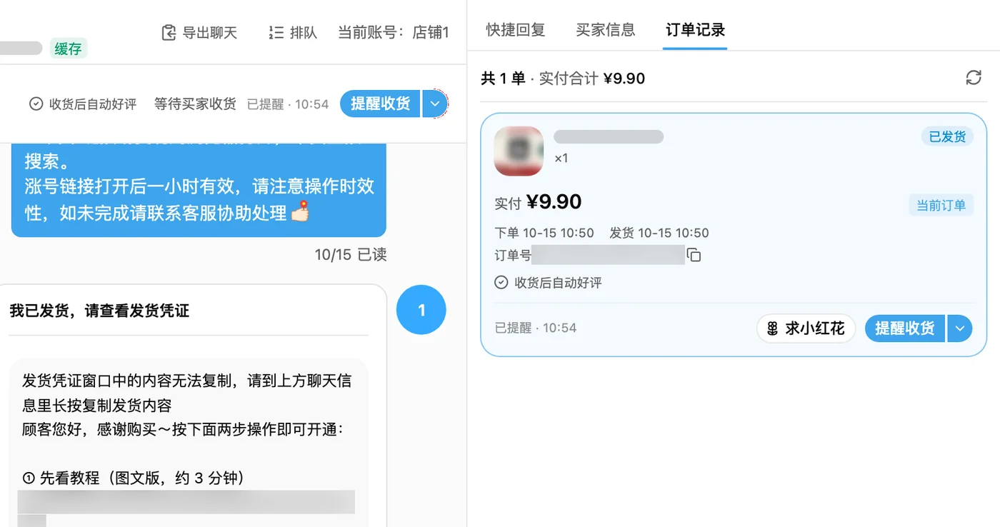
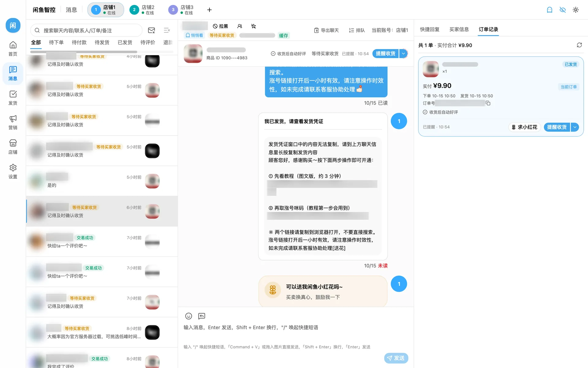
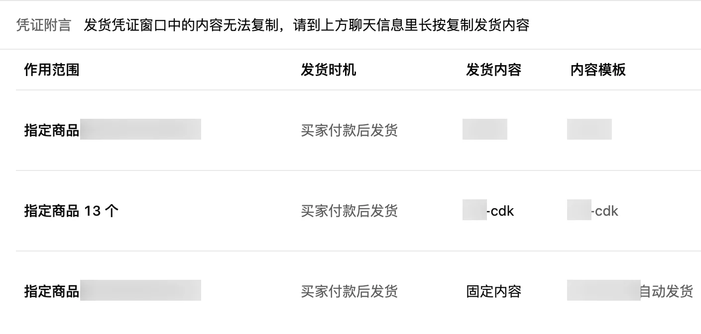
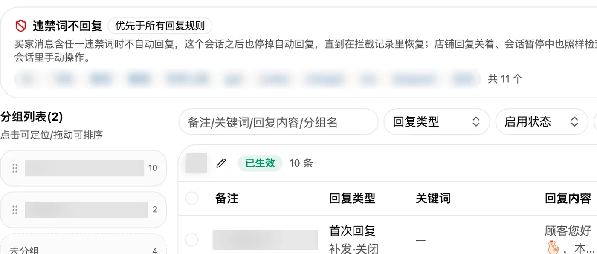
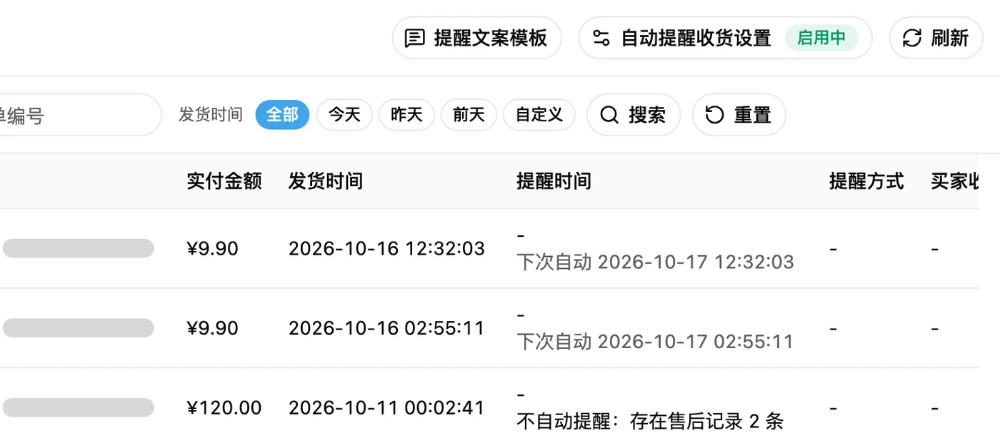
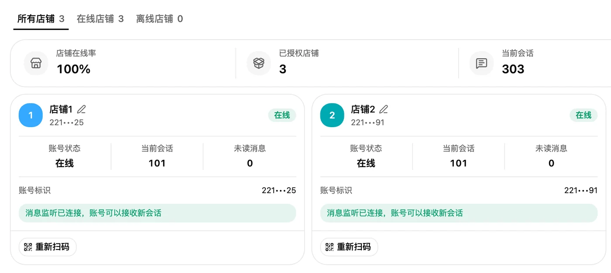
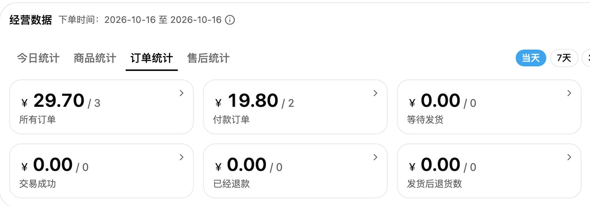

消息与客服
- 一个客户端登录多个店铺，顶栏切换，每个店铺有自己的消息页
- 红点只代表还要你处理：自动发完、评完，红点自己消失
- 右栏是这位买家的每一单，改价、发货、提醒收货、求小红花都在这里
- 按昵称、订单号、聊天文字搜会话；「悄悄看」不让买家看到已读

一处入口管多个闲鱼店铺。买家付款自动发货，来问自动回复，到点提醒收货，收货自动好评，你只处理真正要你处理的事。
消息、发货、回复、评价、数据都在同一个客户端里，下面全是真实界面，买家和商品已打码

六件每天都要做的事，交给它






都是自己开店时一个个补上的
下面是作者自己几个店铺里，闲鱼智控到 2026 年 10 月 28 日为止的累计记录
先装上看看：没激活也能打开看界面，要登录闲鱼店铺时再加微信买激活码
Mac 第一次打开把「闲鱼智控」拖进「应用程序」再打开。系统会问「从互联网下载的 App，确定要打开吗」，点「打开」，以后不再问。暂不支持 Intel 芯片的 Mac。
Windows 第一次打开安装包还没有微软签名，会弹「Windows 已保护你的电脑」：点「更多信息」，再点「仍要运行」。360、火绒等如果拦截，选「允许」或加入信任。
Windows 安装教程第一次装不熟的，照着这份 图文教程 一步步操作即可（Mac 安装很简单，照上面一句话就行）。
当前版本 1.4.0，2026 年 11 月 2 日发布 · 手机上装不了，请用电脑打开本页下载
按月付费，加作者微信购买
价格19 元起 / 月
微信号OxRabbitno1
能。下载安装后不激活也能打开，看看界面和功能；想登录店铺实际用一用，联系作者可以领 7 天免费试用。正式使用要输入激活码，激活码加作者微信购买，一个码可以激活两台电脑。
要。闲鱼智控在电脑上运行，开着才能自动发货、自动回复。Mac 可以打开「挂机不休眠」，笔记本合上盖子也能接着跑。
看版本：基础版 19 元一个月，每台电脑登录 1 个闲鱼店铺，一份授权两台电脑就是 2 个；高级版 29 元一个月，每台电脑不限店铺数量，管 10 家以上也行。店铺都在同一个客户端里，顶栏一点就切换，每个店铺有自己的消息页。作者自己同时开着 3 个店。
两种方式：把固定卡密导入卡种，按单发出；或者接你自己的发卡接口，每单实时取一张。库存不够会弹窗预警，补货后可以一键补发。
登录到期前会自动续登；平台要求验证时，客户端会自动点「快速进入」恢复登录。救不回来就发邮件告诉你，去店铺页重新扫码即可。
拉黑的买家、有售后的单不评，你也可以给某个买家标「不自动评价」。当时不打算评的单，之后也能一键补评，后台每分钟评三四单，间隔随机。
没有。闲鱼智控是第三方卖家工具，不是闲鱼官方产品，也不是官方的「闲管家」。